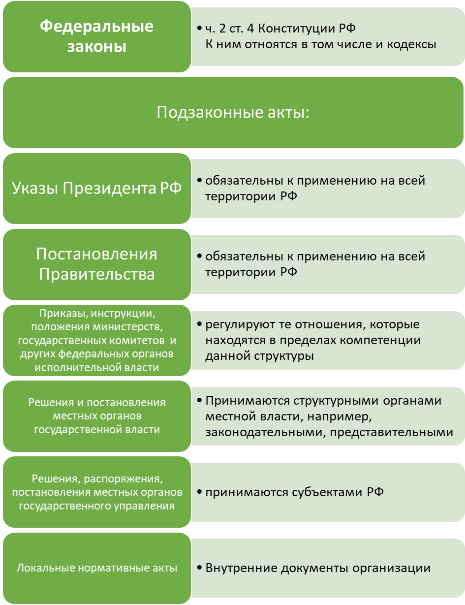
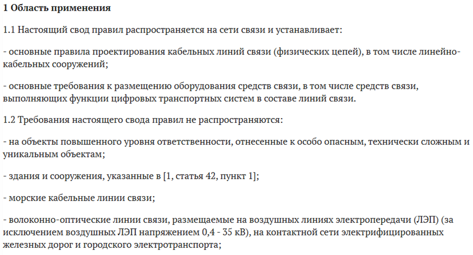
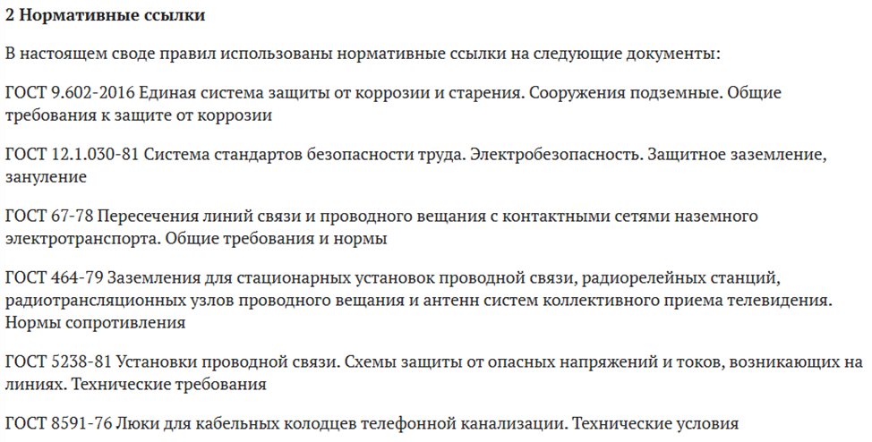
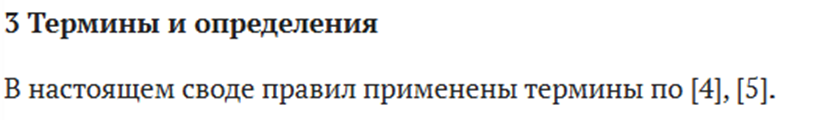
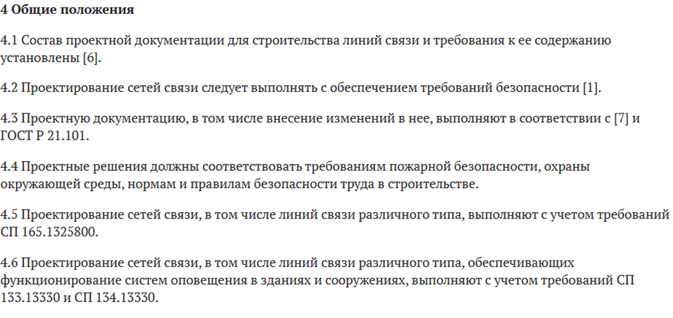

Как легко читать и интерпретировать ГОСТ, СП, СНиП

Нормативная документация – это «язык», на котором говорит строительная отрасль. Новичку он может показаться сложным и бюрократическим, но на самом деле это четкая логическая система.
Умение быстро ориентироваться в нормах – это не просто навык, это ваша юридическая и профессиональная безопасность.
Что есть что? Иерархия и сила документа
В Законодательстве Российской федерации принята следующая иерархия документов.

В строительстве существует строгая иерархия документов. Понимание статуса документа – первый шаг к грамотному проектированию.
- Градостроительный Кодекс: Регулирует всю градостроительную деятельность. Федеральные законы и принимаемые в соответствии с ними иные нормативные правовые акты Российской Федерации, содержащие нормы, регулирующие отношения в области градостроительной деятельности, не могут противоречить этому Кодексу.
- ФЗ (Федеральный Закон): «Высший» после Конституции закон. Например, ФЗ-123 «Технический регламент о требованиях пожарной безопасности» или ФЗ-384 «Технический регламент о безопасности зданий и сооружений». Это основа всего регулирования проектирования. Все технические нормы (СП, ГОСТ) должны выполнять требования Федеральных законов.
Вывод: Ищите в СП ссылки на ФЗ - это даст вам понимание почему это требование существует.
- ГОСТ (Государственный Стандарт): «Закон о качестве». Жесткий, обязательный к применению (если на него есть ссылка в вашем контракте или в нормах). Регламентирует качество материалов, методы испытаний, правила оформления чертежей (ЕСКД/СПДС).
Пример. ГОСТ Р 21.1101-2013 (Оформление документации)
Если вы оформите чертеж не по нему, нормоконтроль его не примет.
- СНиП (Строительные Нормы и Правила): «Закон вчерашнего дня».
Большинство СНиПов сейчас не действуют напрямую, они актуализированы и переизданы в виде СП (Сводов Правил). Используется для работы с старыми проектами или объектами реконструкции.
- СП (Свод Правил): «Закон сегодняшнего дня».
Это актуализированная версия СНиП. Но важно: СП носят рекомендательный характер. Да, вы не обязаны его соблюдать буква в букву, но вы должны обосновать, почему ваше решение, отличное от СП, обеспечивает тот же уровень безопасности и надежности. Это сложно, поэтому проще следовать СП.
Анатомия нормативного документа: Где что искать
Любой СП или ГОСТ имеет универсальную структуру, которая определена в СП 555.1325800.2025, рассмотрим структуру на примере СП 519.1325800.2023:
Область применения (п.1): ВСЕГДА читайте первым! Сразу отсекаете 90% ненужной информации. Этот пункт говорит, к каким зданиям, сетям или процессам относится документ, а также описывает исключения, на которые он не распространяется.

- Нормативные ссылки (п.2): Ваш план дальнейшего чтения. Здесь список всех ГОСТов и СП, на которые есть ссылки в тексте.

- Термины и определения (п.3): Ваш переводчик. «Распределительный пункт» для электрика и для слаботочника - это две разные вещи. Убедитесь, что вы и заказчик говорите на одном языке. Часто бывают, что в СП термины приводят из других нормативных документов, как в случае с нашим документом, тогда в данном разделе приводят ссылки на эти документы.

- Основная часть (п.4,5,6...): Здесь «мясо». Но и тут есть система:
- Общие положения – те, которые относятся ко всему документу

-Требования (правила) – это глаголы, которые указывают: «должно», «следует», «необходимо».
-Рекомендации (методические положения) – это мягкие советы, они содержат такие глаголы-маркеры: «как правило», «целесообразно», «допускается».
-Приложения: Часто самое важное – таблицы, методики расчетов, схемы. Обязательны к применению, если на них есть прямая ссылка в основном тексте.
Нормативный документ – это не книга для чтения от корки до корки. Это справочник. Ваша задача: научиться задавать ему правильные вопросы. Сначала всегда спрашивайте: «Ты вообще ко мне обращен?» (п.1), потом «Что это слово значит?» (п.3), и только затем «Что мне делать?» (основная часть). Удачи, вы освоите этот язык!